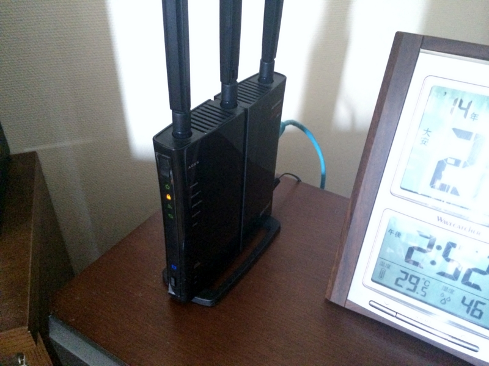
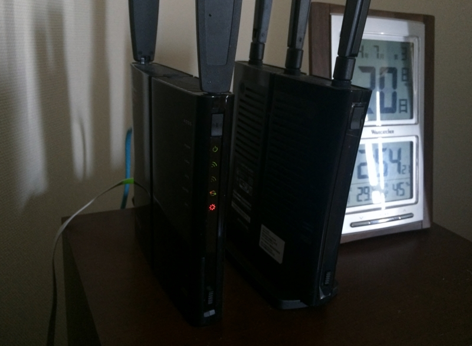

Surface Pro 3 気になるところ【ネットワーク編】
公開日：
Microsoft Surface から Wi-Fi に接続できない | Surface の制限された接続状況 | Wi-Fi が機能しない制限された接続状況のメッセージがまだ表示される場合
制限された接続状況のワイヤレス ネットワーク
制限された接続はさまざまな理由で発生することがありますが、この状態の要点は、インターネットにアクセスできないということです。
この問題は、Windows Update を通して Surface を最新の Wi-Fi ドライバーに更新すると解決する場合があります。
メモ
制限された接続状況には、Wi-Fi ドライバーで制御できる解決方法がない場合もあります。制限された接続状況は、デバイスの Wi-Fi ドライバー、アクセス ポイントのファームウェア、アクセス ポイントの構成などの要因が複雑に関係し合った結果として発生する可能性があります。マイクロソフトでは、制限された接続状況に関して、より多くの問題を Surface ドライバーの更新プログラムで修正できるようにするために努力を続けています。
Surface Pro 3 を Wi-Fi で繋いでいると、“制限あり”になってインターネットへ接続できなくなる。どうやら InstantGo（Connected Standby）へ移行するとそのようになってしまうらしい。
実はこの問題、Surface 2（RT）でも遭遇していたのだけれど、そちらでは“Wi-Fi を ON/OFF”するという方法で回避できていた*1。しかし、Surface Pro 3 の場合はルーターそのものが不安定になってしまい、家中のデバイスが沈黙してしまう。
ちなみに、利用しているルーターはこれ。


BUFFALO 11n/g 450Mbps対応 無線LANルーター Air Station WZR-HP-G450H
- 出版社/メーカー: バッファロー
- 発売日: 2011/06/12
- メディア: Personal Computers
- 購入: 6人 クリック: 47回
- この商品を含むブログ (11件) を見る
ファームウェアをアップデートしたりしても改善されないので、しょうがなく予備にとっておいた古いルーターに取り換えてみた。


BUFFALO 節電+USBポート搭載 11n/a&n/g対応 ハイパワー 無線LANルーター AirStation WZR-HP-AG300H
- 出版社/メーカー: バッファロー
- 発売日: 2010/07/31
- メディア: Personal Computers
- 購入: 12人 クリック: 231回
- この商品を含むブログ (31件) を見る
1日ほど使ってみたところ、これで問題がないみたい（ついでに Surface 2 でのトラブルも解消された）。
InstantGo はルーターとの相性みたいなのが割りとあるのだろうか……ルーターに Surface（InstantGo）適合認定みたいな制度があれば、わしみたいなモノグサにとっては大変助かるんだけれど、これらの問題がルーター単体に起因するとも限らないわけで、なかなか難しいのかもしれない。
ルーターなんか、NAS 機能だのなんだの余計なものを付けず、ただ速く、安定して動作してくれれば満足なのだけど、なかなかいいものに出会えないなぁ（ヤマハとかがいいの？ よく知らんのだが）。古い方のルーターも、たまに落ちてイヤになる。
おまけ
InstantGo そのものは、動きさえすればまじ便利。スリープ中でもちゃんと Skype が受信できるぜー ヒャッハー！ Core i デバイスでも InstantGo が使えるのはだいぶうれしい。
*1:InstantGo が役に立っていない状況だけど